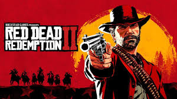
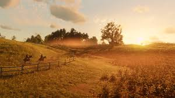
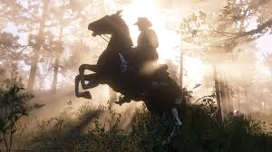
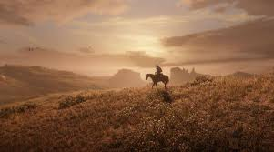

| Title | Read Dead Redemption 2 |
|---|---|
 |
   |
| Main Protagonist | John Marston
Arthur Morgan |
| Major Characters | Alberto Fussar
Andrew Milton Angelo Bronte Catherine Braithwaite Colm O'Driscoll |
Supporting Characters | Ansel Atherton
Anthony Foreman Archibald MacGregor Archie Downs |
| Rating | M for Mature |
| Description | Set in a fictional recreation of the American Old West in 1899, Red Dead Redemption 2 focuses on the life of Arthur Morgan and his position in the notorious Van der Linde gang. The game follows the gang's decline as they are pursued by lawmen, fellow gangs and Pinkerton agents.. |